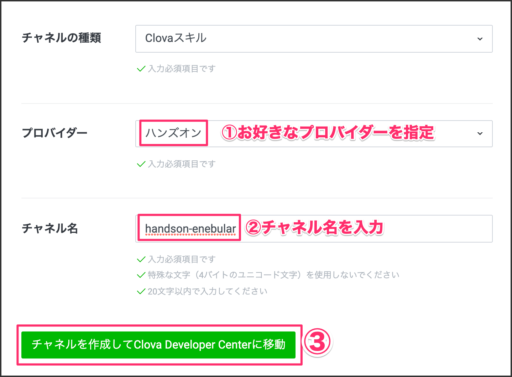
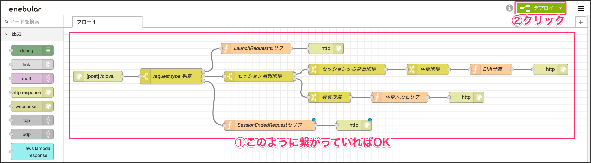

1-1. スキルチャネルの作成
下記にアクセスしてログインしてください。
https://clova-developers.line.biz/
［スキルを開発する］をクリックします。

［LINE Developersでスキルチャネルを新規作成］ボタンをクリックします。
プロバイダーがまだ無い方は作成お願いします。
新規チャネルを作成します。
チャネルはhandson-enebularとしました。［チャネルを作成してClova Developer Centerに移動］をクリックします。

2つのチェックを入れてから、［スキル開発を始める］ボタンをクリックします。
1-2. スキルの設定
Extension IDとスキル名を入力します。
Extension ID | com.あなたの名前.handsonenebular |
スキル名 | コネクトスキル |
呼び出し名（メイン）を設定します。
呼び出し名（メイン） | コネクトスキル |

最後に［作成］ボタンをクリックします。
1-3. 対話モデルを設定する
Clovaと対話するためのモデルを作成します。
左側メニューの対話モデルをクリックし、［対話モデルを編集する］をクリックします。
ビルトインスロットタイプの［＋］をクリックします。

「数値と単位を取得」部分を展開してCLOVA.NUMBERを有効にします。

カスタムインテントの右側にある［＋］をクリックします。インテント名は「MainIntent」と入力し、［作成］ボタンをクリックします。

スロットリスト部分に「num」と入力し、［＋］をクリックします。

スロットタイプのプルダウンメニューからCLOVA.NUMBERを選択します。

サンプル発話リスト部分に「num」を入力し、［＋］をクリックします。
num部分をマウスで選択して、出てきたポップアップメニューでnumスロットを選択します。最後に必ず［保存］ボタンをクリックします。

ビルドを行います。約3分ほどビルドに時間がかかります。

2-1. enebularプロジェクトを作成する
いよいよenebularを使ってClovaと繋いでいきます。
enebularのページにログインしてください。
ログインしたら［Create Project］ボタンをクリックします。
プロジェクト名を入力して、［Submit］ボタンをクリックします。
プロジェクト名 | handson-enebular |
左側メニューの「Flows」をクリックし、右下の［＋］ボタンをクリックします。

Flow名を入力して、カテゴリはotherを選択し、［Continue］ボタンをクリックします。

［Edit］ボタンをクリックして、Flow画面を表示します。

2-2. Flowを作成する
Flow画面を表示して、Clovaに発話させるフローを作成します。
左側メニューの「入力」カテゴリにあるhttpノードをエディタにドラッグアンドドロップします。
ノードをクリックして、メソッドはPOSTを選択し、URLに/clovaと入力します。

機能カテゴリにあるswitchノードをドラッグアンドドロップします。
ノードをクリックして、各項目を埋めていきます。
名前 | request.type 判定 |
③プロパティ | payload.request.type |
④ == | LaunchRequest |

httpノードとswitchノードを繋ぎます。

機能カテゴリにあるfunctionsノードをドラッグアンドドロップします。ノードをクリックして、コード部分に書きコードを記述します。
名前 | LaunchRequestセリフ |
msg.payload =
{
"version": "1.0",
"sessionAttributes": {},
"response": {
"outputSpeech": {
"type": "SimpleSpeech",
"values": {
"type": "PlainText",
"lang": "ja",
"value": "エネブラーからこんにちは！"
}
},
"card": {},
"directives": [],
"shouldEndSession": false
}
}
return msg;

switchノードをfunctionノードを繋ぎます。

出力カテゴリにあるhttp responseノードをドラッグアンドドロップします。
このノードは特に設定することはありません。
functionノードとhttp responseノードを繋ぎます。
2-3. Clovaと連携する
画面右上の［デプロイ］ボタンをクリックして、デプロイを行います。
デプロイボタンの左にiボタンがあるのでマウスオーバーします。すると、ポップアップで表示されるので、アクセスURLをメモしておきます。

Clova Developer Centerページを開きます。左側メニューの開発設定にある［サーバー設定］をクリックします。
サーバーURLに先程メモしたURLを貼り付けて、その末尾に/clovaを追加します。
2-4. シミュレーターで確認する
Clova Developer Centerページのテストをクリックします。
シナリオテストに切り替えて、［○○を起動して］ボタンをクリックします。すると、enebularで設定した値が返ってきます。
3-1. セッションの受け渡し
身長と体重を答えさせて、結果を発話する流れを作っていきます。
セッションを使って、身長データを一時的に保持して、次に来る体重の数値を使って計算してBMIを求めていきます。
まず、LaunchRequestの発話を「エネブラーからこんにちは！」から「BMIを測定するよ！身長を教えてね！」に変更します。
msg.payload =
{
"version": "1.0",
"sessionAttributes": {},
"response": {
"outputSpeech": {
"type": "SimpleSpeech",
"values": {
"type": "PlainText",
"lang": "ja",
"value": "BMIを測定するよ！身長を教えてね！"
}
},
"card": {},
"directives": [],
"shouldEndSession": false
}
}
return msg;

request.type判定をクリックして、［+追加］ボタンを2回クリックします。
プロパティ値にIntentRequestとSessionEndedRequestを追加します。
順番も気をつけてください。
→ 2 | IntentRequest |
→ 3 | SessionEndedRequest |

機能カテゴリにあるswitchノードをドラッグアンドドロップします。
ノードをクリックし、セッション値のnullチェックを行います。
payloadのsessionAttributesにセッション情報が格納されています。初回の場合は、セッション情報が無いので、null値だったらslotのheightから値を取得しています。
名前 | セッション情報取得 |
プロパティ | payload.session.sessionAttributes.height |
→ 1 | is not null ※プルダウンメニューから選択 |
→ 2 | is null ※プルダウンメニューから選択 |

ノードを繋ぎます

機能カテゴリにあるchangeノードをドラッグアンドドロップします。
このノードは指定した値を別の変数に格納することができます。
名前 | セッションから身長取得 |
③値の代入 | height |
④対象の値プルダウンメニュー | msg. |
⑤対象の値 | payload.session.sessionAttributes.height |
ノードを繋ぎます。

機能カテゴリにあるchangeノードをドラッグアンドドロップし、ノードを繋ぎます。
ノードをクリックして、スロットから対象の値を取得して変数に代入します。
名前 | 体重取得 |
④値の代入 | weight |
⑤対象の値プルダウンメニュー | msg. |
⑥対象の値 | payload.request.intent.slots.num.value |

機能カテゴリにあるfunctionsノードをドラッグアンドドロップし、ノードを繋ぎます。
ノードをクリックして、BMI値の計算を行います。
コードは以下の通り。
const height = msg.height;
const weight = msg.weight;
const bmiVal = (parseFloat(weight) / (parseFloat(height)/100 * parseFloat(height)/100)).toFixed(1);
const speechText = `あなたのBMIは${bmiVal}です。`;
msg.payload =
{
"version": "1.0",
"sessionAttributes": {},
"response": {
"outputSpeech": {
"type": "SimpleSpeech",
"values": {
"type": "PlainText",
"lang": "ja",
"value": speechText
}
},
"card": {},
"directives": [],
"shouldEndSession": false
}
}
return msg;
名前 | BMI計算 |
出力カテゴリにあるhttp responseノードをドラッグアンドドロップし、ノードを繋ぎます。

3-2. 体重を聞き出す
身長のセッションがまだ格納されていない場合は値を一旦変数に格納しておきます。
機能カテゴリにあるchangeノードをドラッグアンドドロップし、線で繋ぎます。
ノードをクリックして、変数に格納していきます。
名前 | 身長取得 |
④値の代入 | height |
⑤対象の値プルダウンメニュー | msg. |
⑥対象の値 | payload.request.intent.slots.num.value |
機能カテゴリにあるfunctionノードをドラッグアンドドロップし、ノードを繋ぎます。
ノードをクリックして、Clovaのセッションに身長データを渡しています。
4行目のsessionAttributesにセッション情報を格納することができます。
msg.payload =
{
"version": "1.0",
"sessionAttributes": {
"height": msg.height
},
"response": {
"outputSpeech": {
"type": "SimpleSpeech",
"values": {
"type": "PlainText",
"lang": "ja",
"value": "体重をキログラムで教えてね"
}
},
"card": {},
"directives": [],
"shouldEndSession": false
}
}
return msg;
名前 | 体重入力セリフ |

出力カテゴリにあるhttp responseノードをドラッグアンドドロップし、ノードを繋ぎます。

3-3. スキル終了に対応する
機能カテゴリのfunctionsノードをドラッグアンドドロップし、ノードを繋ぎます。
ノードをクリックして、コードを入力します。
16行目のshouldEndSessionがtrueだと会話が終わり、スキルを終了することができるようになります。
msg.payload =
{
"version": "1.0",
"sessionAttributes": {},
"response": {
"outputSpeech": {
"type": "SimpleSpeech",
"values": {
"type": "PlainText",
"lang": "ja",
"value": "ばいばい！"
}
},
"card": {},
"directives": [],
"shouldEndSession": true
}
}
return msg;
名前 | SessionEndedRequestセリフ |

出力カテゴリにあるhttp responseノードをドラッグアンドドロップし、ノードを繋ぎます。
3-4. デプロイする
全体の図は以下の通りです。全てのノードが繋がっているか確認して、
デプロイボタンをクリックしてください。

デプロイが終われば、シミュレーターでテストしてみましょう。
身長と体重を入力するとBMIが返ってきます。